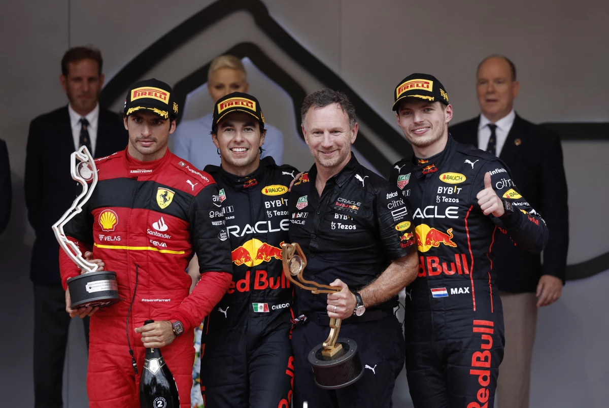

Aprenderas y te Informaras del famoso Deporte Formula 1
Introducción a la Formula 1
15/marzo/2022
Que es la formula 1 y por que es tan famoso?
Que es la formula 1? la formula 1 es uno de los deportes con mas repercucion de estos años y legendario en el mundo del automovilismo es mas conocido
por lo extremo de peligroso que es y lo demandante que es,poder ver a esos coches tan iconicos de carreras ir a mas de 300 kilometros
por hora
2021? Por que fue un gran año para la formula 1
La formula 1 es el deporte mas grande del autivilismo en una epoca muchas personas no lo consideraban un deporte pensaban que solo son personas manejando eso lo podria hacer cualquiera
pero lo que no saben como es trabajar este deporte tan demandante y muy peligroso y el por que en los ultimos años se volvio nuvamente famoso tras un espetacular temporada
en el 2021 tras lamasiva lucha de red bull y mercedes y la disputa del campeonato entre Lewis Hamilton y Max Versstapen
Que es la formula 1 para este 2022
En el año 2022 la formula es la moda y lo famoso de ahora tras tener un espetacular 2021 en la f1 a
llegado a muchas mas personas que hoy en dia cadacarrera es vista por millones de personas esta temporada
2022 se espera un espetaculo igual o mas grande que la del 2021 .
Gran Premio de Miami.
Ranking de pilotos de f1 2022
1/1/2022
Max Versstapen
Checo Perez
Lewis Hamilton
Valteri Bottas
Charles leclerc
Carlos Sainz
Lando Norris
Daniel Ricciardo
Fernando Alonso
Estaban Ocon
George Russel
Nicholas Latifi
Alexander Albon
Kevin Magnusen
Mick Shumacher
Sebastian Vettel
Lance Stroll
Guanyu Zhou
Pierre Gasly
Yuki Tsunoda
Estos son los 20 pilotos que disputarian el compeonato de la f1 del 2022
Parrila de salida 1 carrera F1 2022.
Sitios oficiales donde podras llenarte de la mejor informacion de la F1
GRAN PREMIO DE MONACO:El gran premio de monaco 2022 llamo la atencion de todos los fans fue una espetacular carrera de estrategia entre Red Bull y Ferrari
en 2022 el campeonato se esta disputando entre Ferrari y Red Bull tras la caida de Mercedes al no elaborar el mejor nuevo carro para el 2022.Tras la fantastica carrera
de monaco a estado saliendo mucho un nombre el nombre del ganador de la carrera CHECO PEREZ el cual se pone en disputa el campeonato de pilotos del 2022 contra su compañero de equipo Max Versstapen y el rival de ferrari Charles leclerc .

Gran premio de Monaco
Video de Youtube del resumen del gran premio de monaco
5/6/22
¡La increible victoria de checo perez en monaco!
En el canal de youtube oficial de la f1 cada carrera que se corre suben un resumen de los mejores momentos de cada Premio
Ademas de encontar los mejores momentos puedes ver entrevistas exclusivas o videos informativos sobre la introduccion de nuevosusarios y fans de la f1
antes de cada carrera mustran en vivo el recorido de los pilotos por el circuito,tambien muestran si no tienes f1 tv te muiestran los mejores onboard de cada
carrera
En este caso la gran carrera de Monaco muestran la increible carrera de estrategia y emocionante entre Red Bull y Ferrari los momentos mas emocionntes del mismo
uno de las acciones mas sorprendetes el masivo choque de mick shumacher sobre las barreras del trasado de montecarlo que causo una badera roja en el gran premio
se sabe que monaco es una pista de no tantos rebases pero sobre situaciones de lluvia píerre gasly fue uno de los unicops pilotos sobre lapista que mostraron soprendentes adelantamientos en una pista muy dificil
y por supuesto la increible vistoria de checo y su celebracion con todo su equipo, y el momento sentimentalde checo tras escuchar elhimno nacional de mexico en circuito con mas prestigio y el mas dificil del
calendario
Hamilton VS Max 2021
9/6/22
2021-La gran rivalidad entre el 7 veces campeon del mundo Lewis Hamilton vs el joven Max Versstapen fue todo un espetaculo durante toda la tempoprada 2021 tras el deomino de mercedes en los ultimos 6 años Red Bull venia mas fuerte para cambiar eso Es muy conociada la relacion entre Mercedes y Red Bull por competir entre ellos por ver quien es el mejor
Red Bull tenia un carro competitivo para pelear lado a lado contra mercedes solo habria que ejecutarlo, Max y su nuevo compañero de equipo Checo perez iban a por los mercedes -¿Lo lograron?- Los red bull consiguieron derrotar a los campeones del mundo Mercedes
.
Dignissimos accusantium asperiores expedita velit, provident a nisi veritatis consectetur, dolorum neque eveniet dolorem iusto repellendus vero necessitatibus dolore modi quibusdam, officia illo? Inventore pariatur eligendi vero, libero saepe, iste commodi atque facilis
ducimus voluptatem alias impedit mollitia aut iure voluptatibus delectus consequatur. Aliquam nulla maxime ipsum temporibus sed? Dicta eligendi nihil nisi repudiandae magnam ad, quisquam voluptatum repellendus beatae pariatur? Amet nemo placeat consequatur numquam
suscipit minus sed. Consequatur eveniet nostrum corporis ad numquam odio et eos nam omnis dignissimos? Nostrum, illo! Recusandae maxime est, ab quos error quibusdam tempore soluta quisquam, beatae cupiditate, odio officiis nihil obcaecati ipsa?
Molestiae, porro culpa delectus vero nihil rem perspiciatis quasi, reprehenderit atque animi doloribus quo iste officia consequuntur dolore ullam impedit consequatur voluptatibus explicabo, maxime veritatis. Repudiandae mollitia autem natus harum animi, suscipit voluptatum
nobis veniam recusandae qui nisi praesentium illo ad molestiae eligendi? nobis veniam recusandae qui nisi praesentium illo ad molestiae eligendi?
--At, optio. Ea debitis totam ducimus.
Quia eos inventore harum officiis porro maxime ex facere reprehenderit provident hic et, vitae repellat corporis dignissimos odio consequuntur qui rerum tempora
distinctio, voluptate dolor? Facilis reiciendis assumenda nostrum deserunt dolore ducimus cum nihil ratione cumque, officia, doloremque omnis repudiandae. Omnis doloremque saepe harum mollitia praesentium. Facere at debitis eveniet magnam!
Saepe pariatur nostrum, libero incidunt nulla ipsam sit! Veniam, eos. Beatae, nihil voluptates. Fugit ea ratione iusto reiciendis voluptatibus dicta, corrupti ipsa, voluptatum maxime qui ullam aliquid enim reprehenderit dolor laudantium magnam! Hic beatae, voluptatem
corrupti.Eius, iure dolor molestiae et veritatis vero nulla debitis expedita molestias delectus quam non nesciunt, facere alias at magnam numquam facilis cum soluta! --Ipsam ad sequi deleniti alias aut nihil labore error architecto eaque, ex non, dolore ab et?
Distinctio quidem ipsam
rem illo alias. Dolores rem autem beatae, eaque quam similique nemo deserunt expedita amet quos distinctio praesentium architecto! Quo repellat nihil quam.
 Introducción a la Formula 1
Introducción a la Formula 1